승강기기사 (2008-03-02 기출문제)
1과목: 승강기 개론
1. 즉시작동식 비상정지장치가 작동할 때 정지력과 거리에 대한 그래프로 알맞은 것은?
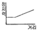
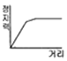
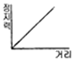
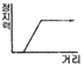
(정답률: 80%)

2. 간접식 유압엘리베이터의 설명으로 옳지 않은 것은?
- 플런저의 길이가 직접식에 비하여 짧기 때문에 설치가 간단하다.
- 오일의 압축성 때문에 부하에 따른 카 바닥의 빠짐이 크다.
- 실린더의 점검이 쉽다.
- 비상정지장치가 필요 없다.
(정답률: 80%)
3. 다음 중 일반적으로 카측 뿐만 아니라 균형추 측에도 비상정지장치를 설치하여야 하는 경우는?
- 카의 속도가 210m/min 이상인 경우
- 피트 깊이가 1800mm 이상인 경우
- 카의 속도가 300m/min 이상인 경우
- 승강로 피트 바닥밑에 통로가 설치된 경우
(정답률: 77%)
4. 승강장이 설치되는 장애인용 호출버튼의 높이로 승강기 검사기준에 올바른 것은?
- 바닥면으로부터 1.2m이상 1.5m이하
- 바닥면으로부터 0.8m이상 1.2m이하
- 바닥면으로부터 0.9m이상 1.3m이하
- 바닥면으로부터 1.0m이상 1.4m이하
(정답률: 71%)
5. 경사도가 8°를 초과하는 수평보행기의 디딤판의 속도는 몇 [m/min]이하로 하여야 하는가?
- 30m/min
- 40m/min
- 50m/min
- 60m/min
(정답률: 57%)
6. 다음 ( )에 알맞은 것은?
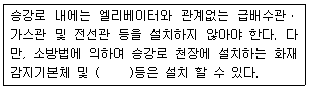
- 비상용 소화기
- 비상방송용 스피커
- 비상용 전화기
- 비상용 경보기
(정답률: 73%)
7. 1: 1 로핑방식에 비하여 4:1 로핑방식의 단점으로 옳지 않은 것은?
- 로프의 수명이 짧다.
- 로프의 장력이 커진다.
- 로프의 길이가 현저히 길어진다.
- 종합효율이 낮아진다.
(정답률: 67%)
8. 엘리베이터 브레이크(제동기)의 설명 중 옳지 않은 것은?(단, G는 중력가속도이다.)
- 브레이크의 감속도는 일반적으로 1.0G이상으로 한다.
- 가가 정지된 후에도 부하에 의한 불균형으로 역구동되어 움직이지 않도록 하여야 한다.
- 전동기의 관성력, 카, 균형추 등 엘리베이터의 제반장치의 관성을 제지하는 역할을 할 수 있어야 한다.
- 승객용 엘리베이터에서는 125%의 부하로 전속력 하강중인 카를 안전하게 감속, 정지시킬 수 있어야 한다.
(정답률: 82%)
9. 소선강도에 의한 와이어로프의 설명 중 옳은 것은?
- E종은 150kgf/mm2급 강도의 소선으로 구성된 로프이다.
- A종은 일반 와이어로프와 비교하여 탄소량을 작게 하고 경도를 낮춘 것으로 파단강도가 135kgf/mm2급이다.
- B종은 강도와 경도가 E종보다 더욱 높아 엘리베이터용으로 사용된다.
- G종은 소선의 표면에 아연도금한 로프로 다습환경의 장소에 사용된다.
(정답률: 79%)
10. 다음 중 유체의 흐름을 한 방향으로만 흐르게 하고 역류를 방지하는데 사용되는 밸브는?
- 글로브밸브
- 슬루스밸브
- 감압밸브
- 체크밸브
(정답률: 80%)
11. 일반적으로 고속의 엘리베이터에 주로 많이 이용되는 조속기는?
- 플라이볼형
- 디스크형
- 스프링형
- 롤세이프티형
(정답률: 70%)
12. 교류2단 속도제어 방식에서 고속과 저속의 속도비로서 일반적으로 가장 많이 사용되는 것은?
- 2:1
- 3:1
- 4:1
- 6:1
(정답률: 73%)
13. 에스컬레이터 1200형의 공칭 수송능력은 시간당 몇 명인가?
- 6000
- 7000
- 8000
- 9000
(정답률: 73%)
14. 다음 중 엘리베이터용 전동기의 구비요건으로 알맞지 않은 것은?
- 기동 전류가 작을 것
- 소음이 적을 것
- 회전부분의 관성 모멘트가 클 것
- 빈번한 운전으로 안한 온도 상승에 충분히 견딜 것
(정답률: 73%)
15. 다음 중 적용하는 가이드레일의 규격을 결정하기 위하여 고려하여야 하는 사항과 거리가 먼 것은?
- 카에 불균형한 큰 하중에 따른 회전 모멘트
- 지진시 수평 진동력
- 비상정지장치의 작동에 따른 좌굴
- 정격속도 및 적재하중
(정답률: 73%)
16. 도어머신에 대한 설명 중 옳지 않은 것은?
- 정전시 도어를 손으로 열 수 있어야 한다.
- 감속장치는 기어에 의한 방식이외에 벨트나 체인에 의한 방식도 사용되고 있다.
- 소형경량화 및 소음이 적게 발생하기 위해서는 AC모터와 감속기구 적용이 유리하다.
- 작동회수는 엘리베이터 기동회수의 2배 정도이므로 보수가 쉬워야 한다.
(정답률: 62%)
17. 엘리베이터 정격속도가 1⑤m/min 일 때의 최소 꼭대기 틈새 및 피트 깊이는 각각 몇 [m]이상이어야 하는가?
- 꼭대기틈새 1.2m, 피트 깊이 1.2m
- 꼭대기틈새 1.4m, 피트 깊이 1.5m
- 꼭대기틈새 1.5m, 피트 깊이 1.5m
- 꼭대기틈새 1.8m, 피트 깊이 2.1m
(정답률: 62%)
18. 랙ㆍ피니온식 리프트는 어떤 용도로 많이 사용되는가?
- 병원용
- 고층빌딩승객용
- 아파트용
- 빌딩 신축공사용
(정답률: 77%)
19. 상부체대(too beam)의 최대 처짐량은 부과도니 정지부하를 기준으로 그 값이 얼마 이하이어야 하는가?
- 전장(span)의
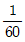
이하 - 전장(span)의
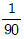
이하 - 전장(span)의
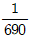
이하 - 전장(span)의
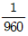
이하
(정답률: 75%)
20. 가변전압 가변주파수 제어방식에서 교류를 직류로 바꾸어 주는 장치는?
- 컨버터
- 인버터
- 리액터
- 인덕터
(정답률: 74%)
2과목: 승강기 설계
21. 엘리베이터 권상기의 감속기구로서 웜 및 웜기어를 채용하려고 한다. 웜의 회전수가 1800rpm이고, 웜기어와 맞물리는 이의 수가 5일 때, 웜기어를 360rpm으로 회전시키려면 웜기어의 잇수를 얼마로 하여야 하는가?
- 10
- 25
- 50
- 100
(정답률: 73%)
22. 건물에 엘리베이터를 설치하려고 한다. 위치 선정시의 고려사항으로 적절하지 못한 것은?
- 각 층 인구의 기하학적 중심에 배치
- 모든 출입구는 가능한 한 수직운송 집합점에 배치
- 여러 대를 설치할 경우에는 가능한 한 분산배치
- 엘리베이터는 가능한 한 주된 출입구의 근처에 배치
(정답률: 70%)
23. 카용 유입완충기에 대한 설명으로 옳지 않은 것은?(오류 신고가 접수된 문제입니다. 반드시 정답과 해설을 확인하시기 바랍니다.)
- 완충기를 완전히 압축한 상태에서 어느 시간 이내에 완전히 복원되어야 한다.
- 압축행정(STROKE) 계산시는 정격속도의 115%에서 충돌했을 경우의 속도로 한다.
- 카 또는 카운터웨이트 충돌시 1g(9.8m/s2)이하의 평균 감속도가 유지되어야 한다.
- 최대 적용하중은 카 자중의 115%로 한다.
(정답률: 58%)
24. 정격적재량 800kg, 정격속도 60m/min, 오버밸런스율 45%, 권상기의 총효율 60%인 승강기용 전동기의 필요 출력은 약 몇 [kW]인가?(오류 신고가 접수된 문제입니다. 반드시 정답과 해설을 확인하시기 바랍니다.)
- 3.7kW
- 4.5kW
- 5.5kW
- 7.5kW
(정답률: 61%)
25. 카의 도착여부를 알 수 있도록 투명창을 설치할 경우 투명창의 크기 기준으로 옳은 것은?
- 최대 폭 200㎜이하, 최대 높이 500㎜ 이하
- 최대 폭 150㎜이하, 최대 높이 400㎜ 이하
- 최대 폭 100㎜이하, 최대 높이 500㎜ 이하
- 최대 폭 100㎜이하, 최대 높이 400㎜ 이하
(정답률: 55%)
26. 승강로 피트의 깊이는 어떻게 정하는가?
- 정격속도에 대응하여 정한다.
- 정격속도가 느릴수록 깊게 정한다.
- 속도와 관계없이 1.5m로 정한다.
- 정격속도에 대응하여 정하되 2m이상에서부터 정한다.
(정답률: 75%)
27. 1:1로핑이고, 적재하중이 650kg 승객용 엘리베이터의 카자체 중량이 700kg이며, 로프길이가 40m의 3가닥이다. 또한 단위 m당 로프중량이 0.494kg이며, 파단하중이 5990kg의 로프의 안전율은 약 얼마인가?
- 26
- 24
- 16
- 13
(정답률: 39%)
28. 비상용 엘리베이터에서 1차 소방스위치(키 스위치)를 조작 한 후의 작동사항으로 옳은 것은?
- 문닫힘 안전장치 및 과부하감지장치가 작동하지 않아야 한다.
- 승강장의 호출에는 카가 응답하여야 한다.
- 문닫힘 버튼을 누르다가 손을 떼면 문은 닫히고 있는 상태로 유지되어야 한다.
- 카 내에서의 행선층 등록은 일부 층만 등록이 되도록 한정되어야 한다.
(정답률: 66%)
29. 다음 그림과 같은 도르래에서 W를 구하면? (단, W는 하중, P는 인상력이다.)
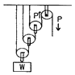
- W=2P
- W=3P
- W=4P
- W=8P
(정답률: 67%)
30. 엘리베이터의 도어 및 부속장치에 대한 사항으로 옳지 않은 것은?
- 고속의 도어장치에는 스프링식의 도어 클로저보다 웨이트식의 도어 클로저가 더 적합하다.
- 공동주택용 엘리베이터의 경우, 카가 주행 중에 저속으로 도어를 손으로 억지로 여는데 필요한 힘은 20kgf 이상이 되도록 한다.
- 승객용 엘리베이터에는 수직개폐방식의 도어는 사용되지 않아야 한다.
- 도어 인터록장치는 도어 록이 먼저 걸린 후 도어스위치가 접점 되도록 한다.
(정답률: 60%)
31. 즉시작동형 비상정지장치의 성능시험시의 흡수 에너지를 구하는 식으로 바르게 나타낸 것은?(단, k : 비상정지장치의 흡수 에너지 [kgㆍm], W : 비상정지장치의 적용중량[kg], V : 적용 조속기의 작동속도[m/s], S : 비상정지장치의 정지거리[m]g : 중력가속도(9.8m/s2)이다.)
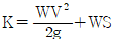
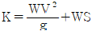
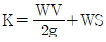
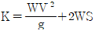
(정답률: 60%)
32. 로프식 엘리베이터에서 양측의 중량비가 너무 크면 미끄러지게 되어 매우 위험하므로 설계시 검토가 필요하다. 미끄러짐을 결정하는 요소에 관한 설명으로 맞는 것은?
- 로프의 권부각이 작을수록 미끄러지기 쉽다.
- 카의 가속도가 작을수록 미끄러지기 쉽다.
- 카의 감속도가 작을수록 미끄러지기 쉽다.
- 카측과 균형추측의 로프에 걸리는 중량비가 작을수록 미끄러지기 쉽다.
(정답률: 70%)
33. 전동기의 입력주파수 60Hz, 극수 4, 슬립 3%, 기어감속비 49:2, 도르래의 지름 540㎜일 때 엘리베이터의 정격속도는 약 몇 [m/min]인가?
- 60m/min
- 90m/min
- 1⑤m/min
- 120m/min
(정답률: 52%)
34. 다음 중 높이가 60m 이하인 건축물에 설치하는 엘리베이터의 설계용 수평진도를 옳게 나타낸 것은?
- 지역계수를 중력가속도로 나눈 값이다.
- 지역계수와 설계용 표준진도를 곱한 값이다.
- 기기의 중력과 설계용 표준진도를 곱한 값이다.
- 설계용 표준진도를 중력가속도로 나눈 값이다.
(정답률: 63%)
35. 순간식 비상정지장치의 일종으로 로프에 걸리는 장력이 없어져서 로프의 처짐현상이 생겼을 때 바로 운전회로를 차단하고 비상정지장치를 작동시키는 것은?
- 슬랙로프 세이프티
- 스프링 클로저
- 세이프티 슈
- 도어 머신
(정답률: 75%)
36. 변압기 용량을 산정할 때 인버터 엘리베이터의 경우 정격 전류는 전부하 상승전류의 약 몇 [%]로 하는가?
- 70%
- 80%
- 90%
- 100%
(정답률: 69%)
37. 기어에 대한 특성으로 옳지 않은 것은?
- 전동이 확실하다.
- 큰 감속이 가능하다.
- 축압력이 크다.
- 회전비가 정확하다.
(정답률: 66%)
38. 기동과 주행은 고속권선으로, 감속과 착상은 저속권선으로 속도를 제어하는 방식은?
- 교류1단 속도제어
- 교류2단 속도제어
- 직류1단 속도제어
- 직류2단 속도제어
(정답률: 67%)
39. 엘리베이터에 사용하는 T형 24K 가이드 레일 1본의 무게는 약 몇 [kg]인가?
- 24kg
- 62kg
- 80kg
- 120kg
(정답률: 69%)
40. 정격속도 150m/min 의 조속기의 과속스위치를 세팅하고자 한다. 다음 중 카용과 균형추용 조속기의 과속스위치 세팅값이 바르게 조정된 것은?
- 카용 : 174m/min, 균형추용 : 191m/min
- 카용 : 191m/min, 균형추용 : 174m/min
- 카용 : 207m/min, 균형추용 : 227m/min
- 카용 : 227m/min, 균형추용 : 207m/min
(정답률: 42%)
3과목: 일반기계공학
41. 18-8 스테인리스강의 주성분으로 적합한 것은?
- Fe, Cr, Zn
- Fe, Ni, Al
- Fe, Cr, Ni
- Fe, Sn, Ni
(정답률: 72%)
42. 지름이 20㎜인 시험편을 인장 시험한 결과 최대하중이 4082kgf이었다. 이 시험편의 인장강도는 약 몇 kgf/mm2인가?
- 10.42
- 104.20
- 12.99
- 129.93
(정답률: 58%)
43. 선반작업에 사용되는 절삭공구의 일반적인 명칭은?
- 숫돌
- 커터
- 탭
- 바이트
(정답률: 70%)
44. 용접부의 미소한 균열이나 작은 구멍 등을 신속하고 용이하게 검출하고 방법으로 철, 비철 재료 및 비자성 재료도 널리 이용되며, 형광 물질을 기름에 녹인 것을 표면에 칠하는 검사 방법은?
- 와류 탐상검사
- 외관 검사
- 자분 탐상검사
- 침투 탐상검사
(정답률: 62%)
45. 유압 작동유의 구비조건 설명으로 틀린 것은?
- 비압축성이어야 한다.
- 열을 방출 시키지 않아야 한다.
- 녹이나 부착 발생 등이 방지되어야 한다.
- 장시간 사용하여도 화학적으로 안정하여야 한다.
(정답률: 79%)
46. 금수펌프에 연결된 흡입관을 저수탱크에 넣을 때 수면으로부터 흡입이 시작되는 관 끝까지의 최소 깊이는?
- 10㎝
- 흡입관 지름의 1배
- 20㎝
- 흡입관 지름의 2배
(정답률: 78%)
47. 어큐뮬레이터(accumulator) 용도 설명으로 틀린 것은?
- 밸브를 개폐하는 것에 의하여 생기는 오일 해머나 압력 노이즈에 의한 충격 압력을 방지한다.
- 폐회로에서의 유온 변화에 의한 오일의 팽창, 수축에 의하여 생기는 유량의 변화를 보충을 해준다.
- 유압펌프에서 발생하는 맥동을 흡수하고, 진동이나 소음방지에 사용한다.
- 직선 왕복운동을 주로 하는 실린더와 회전운동을 하는 실린더로 사용한다.
(정답률: 42%)
48. 비중이 작은 것부터 큰 것의 순서대로 나열된 기계재료 기호는?
- Fe ＜ Cu ＜ Pb
- Cu ＜ Mg ＜ Pb
- Mg ＜ Pb ＜ Fe
- Fe ＜ Pb ＜ Mg
(정답률: 60%)
49. 축의 휨, 원통의 진원도 측정에 가장 적합한 측정기는?
- 다이얼 게이지
- 하이트 게이지
- 버니어캘리퍼스
- 각도 게이지
(정답률: 77%)
50. 10m/s의 속도로 회전하는 원통 마찰차의 두 차를 밀어 주는 힘이 74kgf, 접속 면의 마찰계수가 μ=0.2일 때 전달동력은 약 몇 kW인가?
- 0.85
- 1.20
- 1.45
- 1.80
(정답률: 54%)
51. 1000rpm으로 2000 Nㆍcm 의 비틀림 모멘트를 전달하는 축의 전달 동력은 약 몇 kW인가?
- 2
- 4
- 20
- 40
(정답률: 50%)
52. 연삭 숫돌의 결합제는 숫돌입자를 결합하여 숫돌의 형상을 갖도록 하는 재료이다. 결합제의 필요 조건이 아닌 것은?
- 열과 연삭액에 대하여 안전할 것
- 고속회전에 대한 안전강도를 가질 것
- 입자 간의 기공이 생기기 않도록 할 것
- 균일한 조직으로 임의의 형상 및 연삭액에 대하여 안전할 것
(정답률: 83%)
53. 표준 스퍼기어에서 모듈이 10 이고, 피치원 지름이 180㎜일 때 잇수는 몇 개인가?
- 36
- 18
- 10
- 9
(정답률: 86%)
54. 그림과 같이 브레이크 축에 6670 kgf-㎜의 토크가 작용하고 있을 때 레버에 15 kgf의 힘을 가하여 제동하려면 브레이크 축의 지름 D는 약 몇 ㎜인가? (단, 접촉면 마찰계수는 μ=0.3이다.)
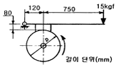
- 98㎜
- 225㎜
- 198㎜
- 327㎜
(정답률: 50%)
55. 그림과 같이 10kN의 집중하중을 받는 단순보에서 Rb에서의 반력이 8kN일때 x값은?
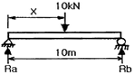
- 2m
- 4m
- 6m
- 8m
(정답률: 62%)
56. 폭이 b이고 높이가 h인 직사각형 단면의 중립축 x-x'에 대한 단면계수는?
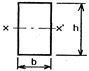
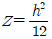
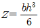
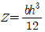
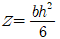
(정답률: 49%)
57. 볼 베어링에서 처음 수명이 Ln인 경우 동일조건에서 베어링 하중만을 2배로 하면 수명은?
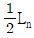
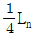
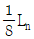
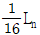
(정답률: 55%)
58. 전기저항용접의 종류인 것은?
- 경납 용접
- 심 용접
- 아크 용접
- 비르밋 용접
(정답률: 71%)
59. 동일 규격의 인장코일 스프링에서 유효 권수만을 2배로 하면 같은 조건의 하중에 대하여 처음 처짐량 δ에 비교한 유효 권수만을 2배로 한 스프링의 처짐량은?
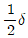
- δ
- 2δ
- 4δ
(정답률: 52%)
60. 재료의 인장강도가 48kgf/mm2인 강재가 안정율이 8이면 허용 인장응력은 몇 kgf/cm2인가?
- 560
- 600
- 640
- 680
(정답률: 57%)
4과목: 전기제어공학
61. 그림에서 S를 OFF했을 때 전류계 Ⓐ가 18A를 나타냈다면 S를 ON 했을 때 Ⓐ는 몇 [A]를 나타내겠는가? (단, 저항의 단위는 모두 Ω이다.)
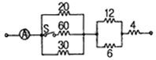
- 10A
- 20A
- 25A
- 40A
(정답률: 55%)
62. 운전자가 배치되어 있지 않는 엘리베이터의 자동제어는?
- 추종제어
- 프로그램제어
- 정치제어
- 프로세스제어
(정답률: 78%)
63. 단상변압기 3대를 △결선하여 부하에 전력을 공급하다가 1대의 고장으로 V결선하여 사용하는 경우 공급할 수 있는 전력은 고장 전과 비교하면 약 몇 [%]가 되는가?
- 57.7%
- 66.7%
- 75.0%
- 86.6%
(정답률: 74%)
64. 어느 회로에 V=30+j10[V]의 전압이 인가되어 I=40+j30[A]의 전류가 흐른다면 이 회로의 역률은 약 몇 [%]인가?
- 85%
- 92%
- 95%
- 98%
(정답률: 38%)
65. 그림과 같은 전자릴레이회로는 어떤 게이트 회로인가?
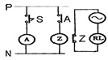
- AND
- OR
- NOR
- NOT
(정답률: 62%)
66. 그림과 같은 회로에서 전류는 전압보다 위상이 앞선다. 다음 중 위상차(θ)를 구한 것으로 알맞은 것은?
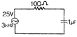
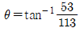
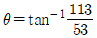
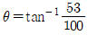
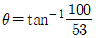
(정답률: 55%)
67. 3상 동기발전기를 병렬운전시키는 경우 고려하지 않아도 되는 것은?
- 기전력 파형의 일치 여부
- 상회전방향의 동일 여부
- 회전수의 동일 여부
- 기전력 주파수의 동일 여부
(정답률: 71%)
68. 그림과 같은 피드백 제어시스템에서 단위 계단 함수를 입력으로 할 때 정상상태 오차가 0.01이 되도록 하는 α의 값은?
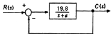
- 0.1
- 0.2
- 0.3
- 0.4
(정답률: 53%)
69. 시퀀스제어에 관한 설명으로 옳지 않은 것은?
- 조합논리회로도 사용된다.
- 기계적 계전기도 사용된다.
- 전체 계통에 연결된 스위치가 일시에 작동할 수도 있다.
- 시간지연요소도 사용된다.
(정답률: 54%)
70. 그림과 같은 브리지 정류회로는 어느 점에 교류입력을 연결하여야 하는가?
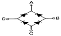
- A-B점
- A-C점
- B-C점
- B-D점
(정답률: 69%)
71. 그림과 같이 철심에 두 개의 코일 C1, C2를 감고 코일 C1에 흐르는 전류 I에 △I만큼의 변화를 주었다. 이 때 일어나는 현상에 대한 설명으로 옳지 않은 것은?
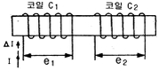
- 전류의 변화는 자속의 변화를 일으키며, 자속의 변화는 코일 C1에 기전력 e1을 발생시킨다.
- 코일 C1에서 발생하는 기전력 e1은 자속의 시간미분값과 코일의 감은 횟수의 곱에 비 례한다.
- 코일 C2에서 발생하는 기전력 e2는 렌쯔의 법 칙에 의하여 설명이 가능하다.
- 코일 C2에서 발생하는 기전력 e2와 전류I의 시간 미분값의 관계를 설명해 주는 것이 자기인덕턴스이다.
(정답률: 66%)
72. 그림에 해당하는 함수를 라플라스 변환하면?
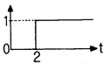
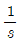
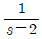
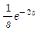
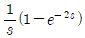
(정답률: 37%)
73. 다음 논리식 중 옳지 않은 것은?
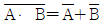
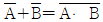
- A+A=A
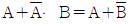
(정답률: 73%)
74. 다음 중 지시전기계기에 장시간 전류를 흘린 후 전류를 끊어도 지침이 0 으로 되돌아오지 못하는 이유로 가장 알맞은 것은?
- 외부자계영향
- 자기 가열
- 스프링 피로도
- 정전계의 영향
(정답률: 46%)
75. SCR(Silicon Controlled Rectifier)의 전원 공급 방법으로 올바른 것은?
- 애도드:㊉전압, 캐소드:㊀전압, 게이트:㊀전압
- 애도드:㊀전압, 캐소드:㊉전압, 게이트:㊉전압
- 애도드:㊉전압, 캐소드:㊀전압, 게이트:㊉전압
- 애도드:㊀전압, 캐소드:㊉전압, 게이트:㊀전압
(정답률: 62%)
76. 발전기의 단자전압을 200V로 일정하게 유지하기 위하여 전압계를 보면서 계자저항을 조정하여 계자전류를 조정한다. 다음 중 잘못 짝지어진 것은?
- 목표값 - 200V
- 조작량 - 계자전류
- 제어량 - 계자저항
- 제어대상 - 발전기
(정답률: 58%)
77. “도선에서 두 점사이의 전류의 세기는 그 두 점사이의 전위차에 비례하고 전기저항에 반비례한다. ” 이것은 무슨 법칙을 설명한 것인가?
- 렌쯔의 법칙
- 옴의 법칙
- 플레밍의 왼손법칙
- 전압분배의 법칙
(정답률: 79%)
78. 광전형 센서에 대한 설명으로 옳지 않은 것은?
- 전압 변화형 센서이다.
- 반도체의 pn접합 기전력을 이용한다.
- 초전 효과(pyroelectric effect)를 이용한다.
- 포토 다이오드, 포토 TR 등이 있다.
(정답률: 66%)
79. 온도, 유량, 압력 등의 상태량을 제어량으로 하는 제어계는?
- 프로세스제어
- 샘플값제어
- 서보기구
- 정치제어
(정답률: 75%)
80. 200V, 2kW 전열기의 전열선을
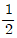
로 할 경우 소비전력은 몇 [kW]로 되겠는가?- 1kW
- 2kW
- 3kW
- 4kW
(정답률: 65%)